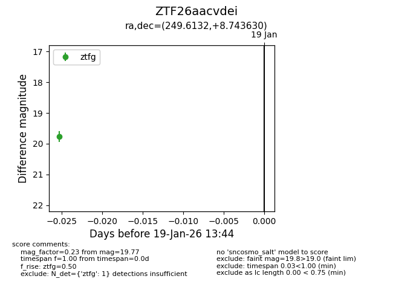
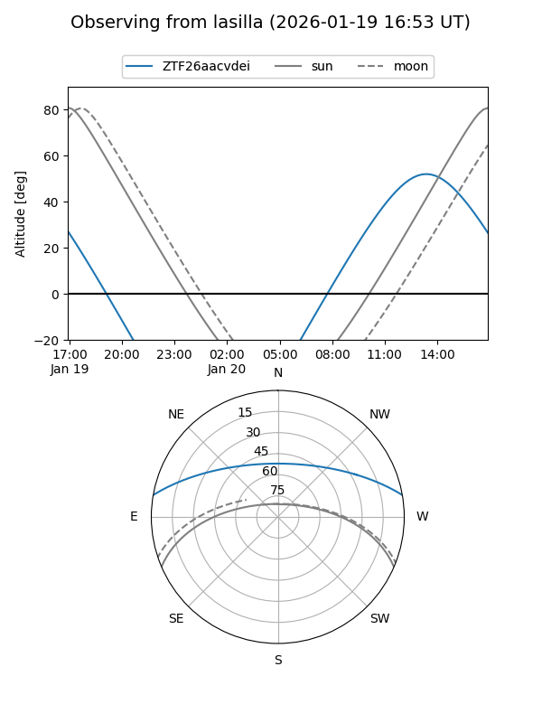
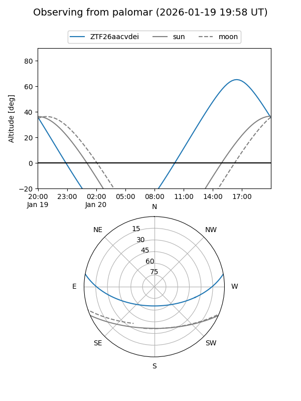

ZTF26aacvdei
Target ZTF26aacvdei at 2026-01-19 13:46
Aliases and brokers:
FINK: link
Lasair: link
ALeRCE: link
alt names
ZTF26aacvdei (ztf,fink_ztf)
Coordinates:
equatorial (ra, dec) = 249.6132,+8.74363
equatorial (HMS+DMS) = 16:38:27.17,+08:44:37.07
galactic (l, b) = (25.2298,+33.47486)
Flags:
Photometry:
last ztfg=19.77
1 ztfg detections
Lightcurve

Visibility


Additional plots